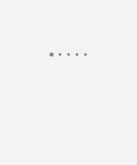
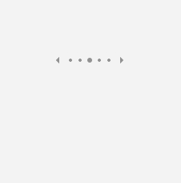
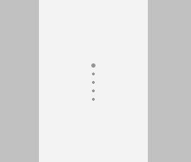
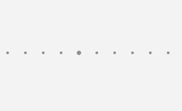
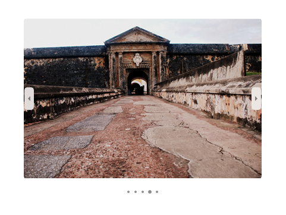
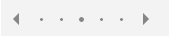

PipsPager
The PipsPager control helps users navigate within linearly paginated content using a configurable collection of glyphs, each of which represents a single "page" within a limitless range. The glyphs highlight the current page, and indicate the availability of both preceding and succeeding pages. The control relies on current context and does not support explicit page numbering or a non-linear organization.
What is a pip?
Pips represent a unit of numerical value, typically rendered as dots. However they can be customized to use other glyphs such as dashes or squares.
By default, each solid dot in the PipsPager control represents a page in the content layout. A user can select a dot to navigate to that page in the content.
Is this the right control?
Use a PipsPager for content organized in a linear structure, is not explicitly numbered, or where a glyph-based representation of numbered pages is desired.
This UI is commonly used in apps such as photo viewers and app lists, where display space is limited and the number of potential pages is infinite.
Recommendations
- Common UI patterns for a PipsPager include photo viewers, app lists, carousels, and layouts where display space is limited.
- For experiences optimized for gamepad input, we recommend against placing UI directly to the left or right of a horizontal PipsPager, and above or below a vertically oriented PipsPager.
- For experiences optimized for touch input, we recommend integrating the PipsPager with a view control, such as a FlipView, to take advantage of on-content pagination with touch (the user can also use touch to select individual pips).
Create a PipsPager
- Important APIs: PipsPager class
The WinUI 3 Gallery app includes interactive examples of most WinUI 3 controls, features, and functionality. Get the app from the Microsoft Store or get the source code on GitHub
A default PipsPager is comprised of five visible pips that can be oriented horizontally (default) or vertically.
A PipsPager also supports navigation buttons (previous, next) to move to an incrementally adjacent page. By default, the navigation buttons are collapsed and do not take up layout space.
Wrapping between the first and last items is not supported.

<PipsPager x:Name="DefaultPipsPager" />
Horizontal PipsPager with navigation buttons
The navigation buttons (previous, next) let the user move to an incrementally adjacent page.
By default, the navigation buttons are collapsed. You can control this behavior through the PreviousButtonVisibility and NextButtonVisibility properties.
Possible values for these properties are:
- Collapsed: The button is not visible to the user and does not take up layout space. (Default)
- Visible: The button is visible and enabled. Each button is automatically hidden when the PipsPager is at the minimum or maximum extent of the content. For example, if the current page is the first page then the previous button is hidden; if the current page is the last page then the next button is hidden. When hidden, the button is not visible but does take up layout space.
- VisibleOnPointerOver: The behavior is the same as Visible except that the button is only displayed when the user hovers the pointer cursor over the PipsPager UI, or the user sets keyboard focus on the PipsPager.

<PipsPager x:Name="VisibleButtonPipsPager"
NumberOfPages="5"
PreviousButtonVisibility="Visible"
NextButtonVisibility="Visible" />
Vertical PipsPager with navigation buttons visible on pointer over
The PipsPager can be oriented vertically with no change to behavior or interaction experience.
The top button corresponds to the first button and the bottom button corresponds to the last button in the horizontal view.
The following example demonstrates the VisibleOnPointerOver setting for the navigation buttons.

<PipsPager x:Name="VerticalPipsPager"
NumberOfPages="5"
Orientation="Vertical"
PreviousButtonVisibility="VisibleOnPointerOver"
NextButtonVisibility="VisibleOnPointerOver" />
Scrolling pips
If the content consists of a large number of pages (NumberOfPages), you can use the MaxVisiblePips property to set the number of visible, interactive pips.
If the value of NumberOfPages is greater than the value of MaxVisiblePips, the pips automatically scroll in order to center the selected page in the control. If the NumberOfPages is equal to or less than MaxVisiblePips, no scrolling occurs and the number of pips shown is the same as the value of NumberOfPages.
If the value of MaxVisiblePips is greater than the available layout space, the displayed pips are clipped. The number of pips displayed is the lesser of MaxVisiblePips and NumberOfPages.
By default, a maximum of five pips are visible.

<PipsPager x:Name="ScrollingPipsPager"
NumberOfPages="20"
MaxVisiblePips="10" />
Integrate PipsPager with a Collection control

A PipsPager is often used in conjunction with collection controls.
The following example shows how to bind a PipsPager with a FlipView and provide another way to navigate through content and indicate the current page.
Note
To use the PipsPager as a page indicator only and disable user interactions, set the control's IsEnabled property to false in the control.
<StackPanel>
<FlipView x:Name="Gallery" MaxWidth="400" Height="270" ItemsSource="{x:Bind Pictures}">
<FlipView.ItemTemplate>
<DataTemplate x:DataType="x:String">
<Image Source="{x:Bind Mode=OneWay}"/>
</DataTemplate>
</FlipView.ItemTemplate>
</FlipView>
<!-- The SelectedPageIndex is bound to the FlipView to keep the two in sync -->
<PipsPager x:Name="FlipViewPipsPager"
HorizontalAlignment="Center"
Margin="0, 10, 0, 0"
NumberOfPages="{x:Bind Pictures.Count}"
SelectedPageIndex="{x:Bind Path=Gallery.SelectedIndex, Mode=TwoWay}" />
</StackPanel>
Pip and navigation button customization
The navigation buttons and pips can be customized through the PreviousButtonStyle, NextButtonStyle, SelectedPipStyle, and NormalPipStyle properties.
If you set visibility through the PreviousButtonStyle or NextButtonStyle properties, these settings take precedence over the PreviousButtonVisibility or NextButtonVisibility properties, respectively (unless they are set to the PipsPagerButtonVisibility value of Collapsed).

<Page.Resources>
<Style x:Key="NavButtonBaseStyle" TargetType="Button" BasedOn="{StaticResource PipsPagerNavigationButtonBaseStyle}">
<Setter Property="Width" Value="30" />
<Setter Property="Height" Value="30" />
<Setter Property="FontSize" Value="12" />
</Style>
<Style x:Key="PreviousButtonStyle" BasedOn="{StaticResource NavButtonBaseStyle}" TargetType="Button">
<Setter Property="Content" Value="" />
</Style>
<Style x:Key="NextButtonStyle" BasedOn="{StaticResource NavButtonBaseStyle}" TargetType="Button">
<Setter Property="Content" Value="" />
</Style>
</Page.Resources>
<PipsPager x:Name="CustomNavButtonPipsPager"
PreviousButtonStyle="{StaticResource PreviousButtonStyle}"
NextButtonStyle="{StaticResource NextButtonStyle}"
PreviousButtonVisibility="VisibleOnPointerOver"
NextButtonVisibility="VisibleOnPointerOver" />
UWP and WinUI 2
Important
The information and examples in this article are optimized for apps that use the Windows App SDK and WinUI 3, but are generally applicable to UWP apps that use WinUI 2. See the UWP API reference for platform specific information and examples.
This section contains information you need to use the control in a UWP or WinUI 2 app.
The PipsPager for UWP apps requires WinUI 2. For more info, including installation instructions, see WinUI 2. APIs for this control exist in the Microsoft.UI.Xaml.Controls namespace.
- WinUI 2 Apis: PipsPager class
- Open the WinUI 2 Gallery app and see the PipsPager in action. The WinUI 2 Gallery app includes interactive examples of most WinUI 2 controls, features, and functionality. Get the app from the Microsoft Store or get the source code on GitHub.
To use the code in this article with WinUI 2, use an alias in XAML (we use muxc) to represent the Windows UI Library APIs that are included in your project. See Get Started with WinUI 2 for more info.
xmlns:muxc="using:Microsoft.UI.Xaml.Controls"
<muxc:PipsPager />